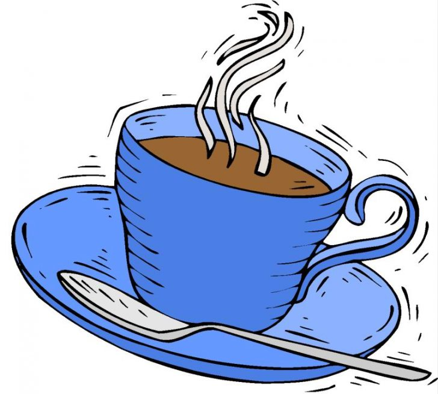
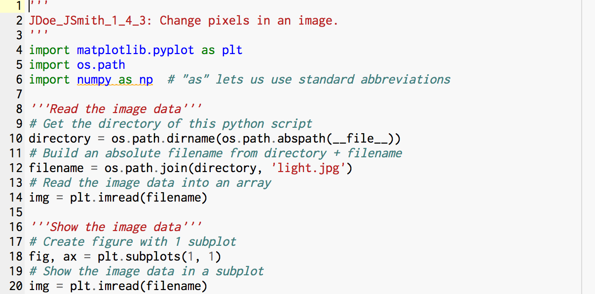

Mr. PolarBear vs The World - Scratch Project
In this game you will move your mouse to save Mr. Polar Bear. Do so by dodging the CO2 molecules and collecting the power ups. Good Luck!

Quiz Game - Mit App Inventor
This is a quiz about my awesome partner Ron.Scan this QR Code to play.


Finding a Prom Date - Python Flowchart
Take this quiz to find your perfect computer science date! <3 <3
Cafe Dunlea - Python
This is a game where you visit Cafe Dunlea. It calculates your total and adds a tip. Click below to play!
Image Modification - Python
The left picture is the unedited image and the right image is edited. The pictures below that show the code (in Python) used to make this edit.
MPTLW Lesson 1.5
This is lesson 1.5. We used Python to edit this image.Below you can see the modified image and the code used to modify it.
Python Graph Data Project
This is a python project where we took data and made a graph from it. Jason was my partner, who was very difficult to work with initialy. However, we overcame our differences and accepted each other for who we really are. Now we are best friends and I only have Mr. Dunlea to thank for that. I really enjoyed working on this project and creating intriguing ways to display data. I expect nothing less than an A.
NetLogo Project
In this project we asked how does a 3d Surface move. We took a simulation from NetLogo, modified the code, and analyzed the effects it had. The non modified version is on the left. The modified version is on the right where, within the code, I changed the shape of the turtles to hearts, the color of them to pink, and the speed at which they moved . (Click on either image to see the original simulation)